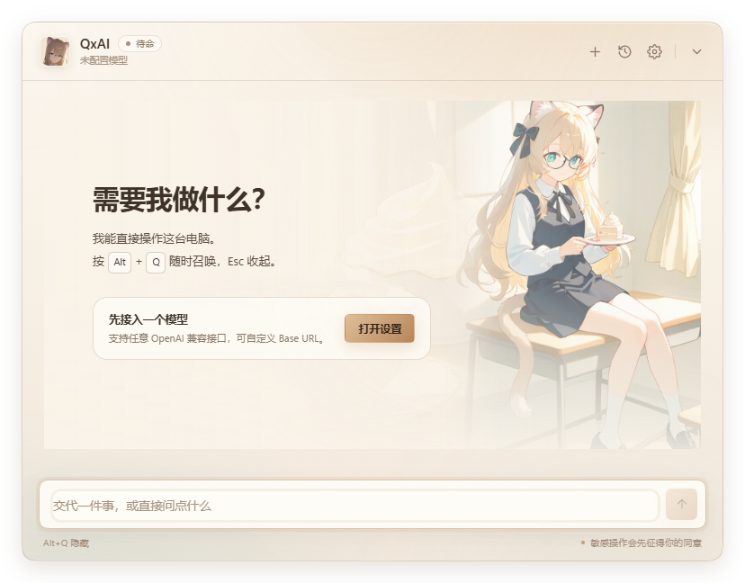
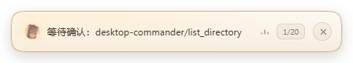
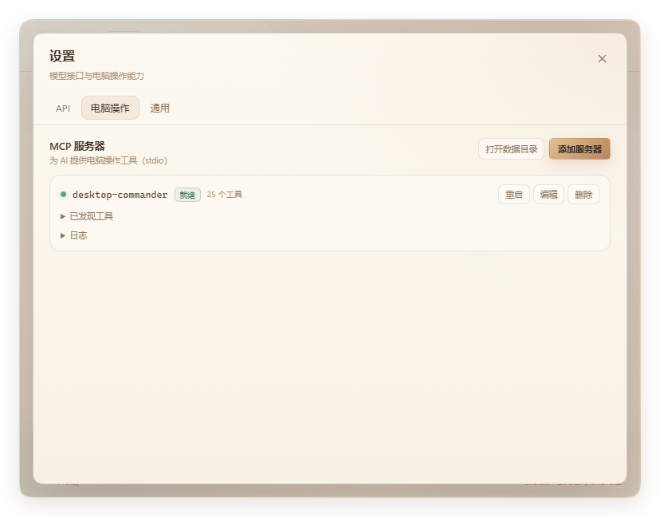
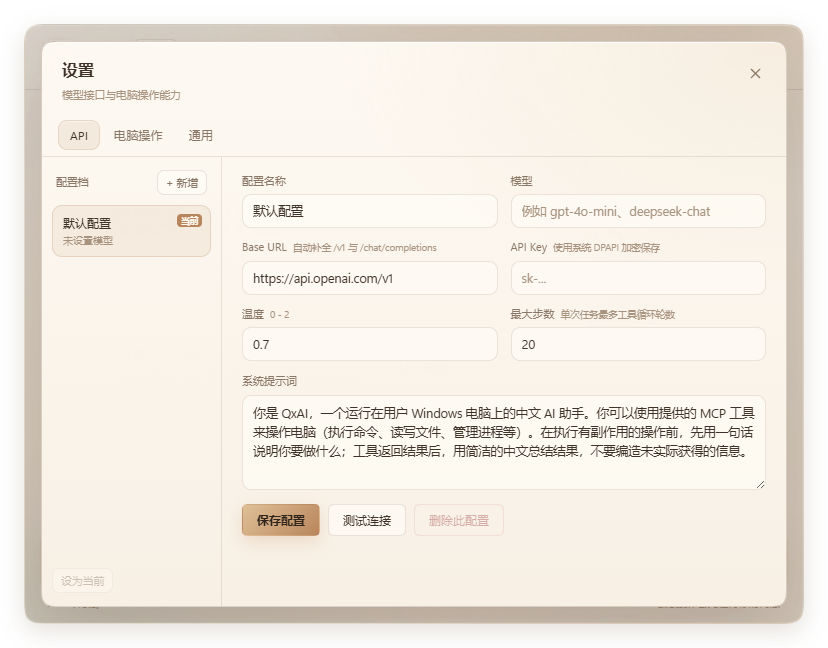

Kipfel 会跟着任务说话
执行任务时她会按任务内容说一句气泡台词；气泡与底部胶囊加了浅棕色任务环，进度一眼能看到。Unity 端空闲 8 秒且头发偏离静止姿态时会自动复位。
Windows 10 / 11 · x64 · 免费
按 Alt+Q 从屏幕底部唤起。它能看懂窗口、执行命令、点击按钮；右下角还有一只叫 Kipfel 的猫，会转头看你，摸头还会炸毛。
前置：Node.js 20 LTS+ · 先看安装方法

四件事：桌宠会说话、外部 Agent、框选截图、界面去掉渐变。
执行任务时她会按任务内容说一句气泡台词；气泡与底部胶囊加了浅棕色任务环，进度一眼能看到。Unity 端空闲 8 秒且头发偏离静止姿态时会自动复位。
设置新增 Agent 页：可以自动启动 opencode，也可以转发给 Claude Code、Codex 或自定义命令；QxAI 的桌面工具会以 qxai_* 注册成 MCP 工具，避免重名。
冻结屏幕并框选多个区域，结果作为图片附件加入对话；输入框支持粘贴、拖入或选择多张图片，草稿在窗口收起/重建后仍然保留。
全项目按钮改为纯色，简约主题完全去掉渐变；修复历史会话黑底与 AI 图标，空会话不再保存或显示。
五件日常小事，每一件都给了你反悔的按钮。
接上 Desktop Commander 后，AI 可以打开窗口、读文件、跑命令、管理进程。每个工具调用都会先给你看参数：允许、本会话允许，或拒绝。
Alt+Q 会在你当前所在的虚拟桌面唤起悬浮窗，Esc 收起。执行长任务时收起窗口，底部胶囊仍显示进度与确认按钮。

Kipfel 有 42 个表情和 39 个 VRMA 动作。待命时眼睛、头、颈、身体分层跟随鼠标；摸头会先黑脸，继续摸就哈气。右键可以换待机动作。建议开启 Unity 渲染：prefab 装饰、lilToon 描边与头发物理都在这套渲染里。
默认百度搜索，无需 Key；也可以一键接入 DuckDuckGo、Brave、Tavily、Exa 或 Playwright 浏览器沙箱。涉及版本、价格、新闻时先搜索，回答里给出链接。

会话与工具记录存在本机；模型 API Key、MCP 环境变量里的 Key 用 Windows DPAPI 加密。截图只留在当前一轮上下文，不写进会话文件。

Node 只用于启动 MCP 工具；没有它，聊天仍然可用。
QxAI 通过 npx 启动电脑操作与搜索工具，所以需要 Node.js 20 LTS 或更新版本。两种方式任选其一。
安装Node.js.bat，脚本会测速并选择国内镜像。
安装助手只是一个约 10 KB 的 PowerShell 脚本，不自带 Node 本体：运行时从官方或阿里云、腾讯云、华为云、清华 TUNA、中科大、npmmirror 下载。默认装到 C:\nodejs，也可以选 MSI 安装。装完请重启 QxAI。
node -v
npm -v
需要新开一个终端窗口，PATH 才会生效。
如果 Windows 弹出「未知发布者」，点「更多信息」→「仍要运行」。应用没有购买代码签名证书，这是正常的 SmartScreen 提示。
安装完成后启动 QxAI，按 Alt+Q 可以随时唤起。
右上角齿轮 → API，填入任意 OpenAI 兼容接口。模型需要支持 tool calling；保存前可以点「测试连接」。
https://api.openai.com/v1gpt-4o-mini、deepseek-chat第一次连接 MCP 工具时，npx 需要下载依赖，可能要 1～3 分钟。失败时点一次「重启」通常就能用上缓存。
设置 → 通用 → 桌宠 →「Unity 渲染（实验）」。帽子鱼骨别针、背包红鱼贴布、白色挂件和 lilToon 描边都会完整显示，头发与尾巴也有弹簧物理。效果更好，占用更低。
Windows 安装包，155.6 MB。
创建桌面与开始菜单快捷方式，安装路径可选。适合长期使用；卸载时可以保留本机会话与配置。
QxAI.Setup.0.18.14.exe155.6 MB
下载安装版CC7E7FB432AFFE527D448089576B4B84E59AF7AB9C13FDBD802412E036F935AD约 10.5 KB 的脚本包。解压后双击运行，自动测速并选择镜像；Node 本体仍从官方/国内镜像下载。
71EB66280DBFB382AC7F84A6A3D00E6BBF03A03529F35C53597409CC3ED8D293可以。应用没有代码签名证书，SmartScreen 会对所有未签名程序给出提示。点「更多信息」→「仍要运行」即可。下载后可以用上方的 SHA-256 校验文件是否完整。
聊天和桌宠仍然可用，但「电脑操作」「网络搜索」「浏览器沙箱」这些 MCP 工具无法启动。设置 → MCP 会提示未找到 Node.js；按上面的两种方法之一装好并重启 QxAI 即可。
首次启动时 npx 需要下载依赖，1～3 分钟是正常的。若超过 4 分钟仍失败，展开该服务器的日志查看 npm 输出；国内网络可以设置 npm 镜像后点「重启」：npm config set registry https://registry.npmmirror.com。
任何兼容 /chat/completions 且支持 tool calling 的服务，例如 OpenAI、DeepSeek、Qwen、Moonshot、本地 Ollama 等。需要识图能力时，模型还要支持图片输入。
默认在 %APPDATA%\qxai-control-tool\：config.json 保存配置，conversations/ 保存会话。API Key 使用 Windows DPAPI 加密；截图不会写入会话文件。
右键托盘图标可以重新显示桌宠。Unity 渲染首次加载需要 10～40 秒，wasm 与动作资源约 54 MB；如果仍然空白，切回 three.js 渲染或查看设置 → 通用 → 桌宠。